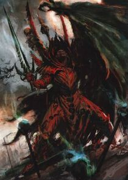
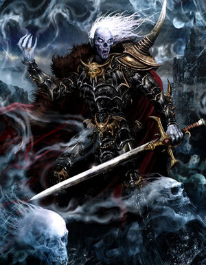
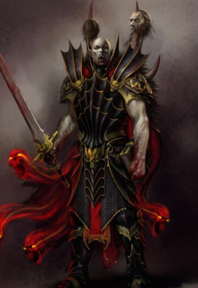

Вампиры – истинные повелители бессмертия. Несмотря на проклятие, они сохраняют весь свой коварный интеллект, и, следовательно, все амбиции и желания. Это воистину делает их очень опасными, ибо они могут продолжать расти и учиться, посвящая вечность совершенствованию своих умений и оттачиванию дьявольских планов и интриг. В конце концов, вампир - эгоистичное существо, сохраняющее множество черт характера и побуждений, которыми оно обладало, будучи смертным. В то время как самые дикие из их рода существуют лишь чтобы питаться, часть жаждет владеть миром и подчинить себе живых.
Вампир, вошедший в историю как Влад фон Карштайн, родился в древней Неехаре и при жизни был известен как Вашанеш, полководец армии царя Кхемри Сетепа и кровный родственник Нагаша, Великого некроманта. Сетеп планировал поход на Ламию, где распространился культ поклонения Нагашу, но Вашанеш предал царя и бежал на юг, чтобы предупредить ламийцев о готовящемся нашествии.Прибывший издалека родич произвёл на царицу Неферату такое впечатление, что она в конце концов предложила Вашанешу стать её супругом и соправителем Ламии. Недолго думая, Вашанеш выпил эликсир бессмертия, превратившись в вампира. Совместными усилиями владыки вампиров укрепили своё царство, но войну против Ламии смогли лишь отсрочить.Царь Алкадизаар Завоеватель, объединивший против Ламии не только все царства Неехары, но и подчинённые земли Арабии, в кровопролитной войне низверг Проклятый Город; множество вампиров погибло, но сильнейшим из первородных вампиров, среди которых был и Вашанеш, удалось спастись.Возможно, привлечённые каким-то чутьём к властелину нежити, семь великих повелителей всех вампиров бежали на север, и один за другим прибыли в Нагашиззар.
Маннфред фон Карштайн, известный в молодые годы как Маннфред послушник, является самым хитрым и магически одаренным вампиром из всей родословной фон Карштайнов. Маннфред претендует на наследственный титул графа вампиров Сильвании, титул, который дается только первому из его родословной. Проникнутый ошеломляющей магической силой, Маннфред фон Карштайн сумел, благодаря чистому честолюбию и силе воли, накопить все заклинания из знаний вампиров и знаний некромантии; проведя большую часть века, собирая эти запретные знания из инкрустированных песком библиотек древней Неехары. Как и многие из его вампирского рода, Маннфред много раз вел армии Сильвании на войну, его мастерство в некромантических искусствах поддерживало его армию далеко за пределами их обычного потенциала.Маннфред фон Карштайн также является высококвалифицированным вампирским фехтовальщиком, а также некромантом. В бою Маннфред носит свой древний меч Гействор, мощное двуручное оружие, которое позволяет носителю впитывать и пить кровь убитого, давая Маннфреду возможность омолодить себя в разгар битвы, а также усиливая его контроль над Ветрами магии. Он также носит доспехи Темплхофа, древние боевые д оспехи, которые защищают носителя от вреда и еще больше усиливают и без того необычайную выносливость Маннфреда.